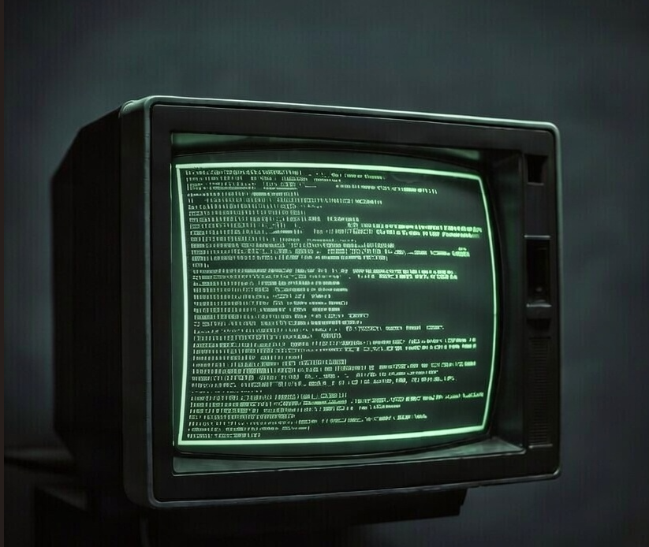

MONITOR 01 // ENTE DE FICCIÓN
SIGNAL: STABLE

ENCRYPTED FEED
MON-01
MON-01
Sin Tiempo para Morir: El Final de una Era
Análisis exhaustivo del adiós de Daniel Craig y el legado de la etapa moderna.
CANAL: ENTE DE FICCIÓN DESCRIPTAR SEÑAL: VER EN YOUTUBE
MONITOR 02 // INTEL RESUMEN
ENCRYPTED RECAP
RECAP DOWNLOAD
MON-02
MON-02
La Era Craig: Resumen y Crítica
Un repaso dinámico y satírico a la etapa más emocional del agente 007.
CANAL: TE LO RESUMO ASÍ NOMÁS DESCRIPTAR SEÑAL: VER EN YOUTUBE
MONITOR 03 // ORIGIN FILE
HISTORICAL DATA
ORIGIN FILE
MON-03
MON-03
Sean Connery: El James Bond Original
Análisis de las misiones que definieron los cimientos de la franquicia.
CANAL: TE LO RESUMO ASÍ NOMÁS DESCRIPTAR SEÑAL: VER EN YOUTUBE
MONITOR 04 // PRESS ARCHIVE
MEDIA ANALYSIS
MEDIA ANALYSIS
MON-04
MON-04
Roger Moore: El Bond Más Promiscuo
Análisis del Bond del encanto, el humor y la aventura extravagante.
CANAL: TE LO RESUMO ASÍ NOMÁS DESCRIPTAR SEÑAL: VER EN YOUTUBE
MONITOR 05 // 90s ARCHIVE
RENAISSANCE DATA
RENAISSANCE DATA
MON-05
MON-05
Pierce Brosnan: El Bond del Renacimiento
Repaso a la era que revitalizó la saga para el nuevo milenio.
CANAL: TE LO RESUMO ASÍ NOMÁS DESCRIPTAR SEÑAL: VER EN YOUTUBE
MONITOR 06 // EVOLUTION FILE
SIGNAL: STABLE
CULTURAL EVOL
MON-06
MON-06
La Evolución de James Bond
De un viejo misógino a un aliado moderno: el cambio cultural del agente 007.
CANAL: TE LO RESUMO ASÍ NOMÁS DESCRIPTAR SEÑAL: VER EN YOUTUBE
MONITOR 07 // INTEL FEED
NEW SIGNAL DETECTED
INTEL FEED
MON-07
MON-07
Expediente Clasificado: Análisis 007
Nueva interceptación de datos críticos sobre la saga James Bond.
CANAL: INTELIGENCIA EXTERNA DESCRIPTAR SEÑAL: VER EN YOUTUBE
MONITOR 08 // GRID STABILIZER
SYMMETRY ACHIEVED
FINAL DATA
MON-08
MON-08
Archivo de Inteligencia 08
Expediente final para la estabilización de la cuadrícula de vigilancia.
CANAL: RECURSOS MI6 DESCRIPTAR SEÑAL: VER EN YOUTUBE